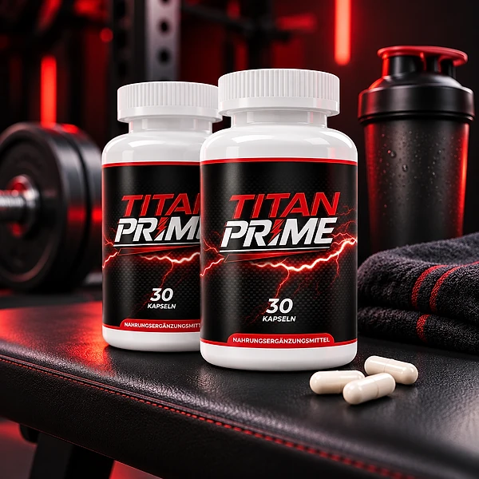
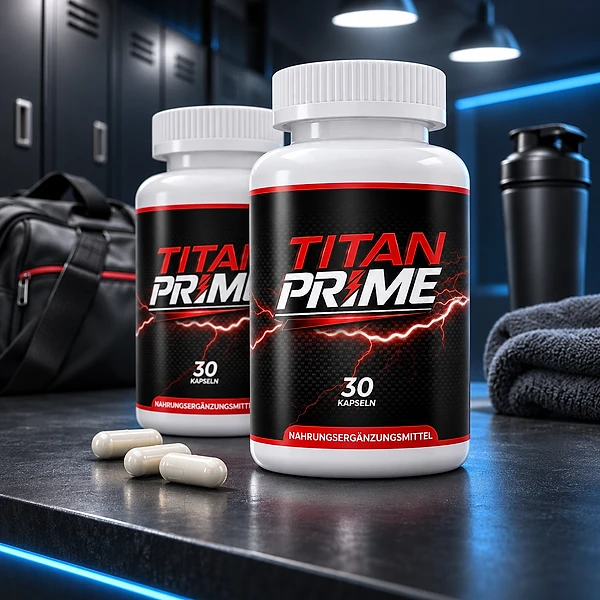
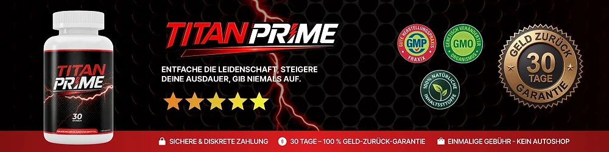

Was ist Titan Prime und wie wirkt es?
Titan Prime ist ein Nahrungsergänzungsmittel in Kapseln, das sich an erwachsene Männer richtet. Die offizielle Website stellt es als tägliche Formel aus Nährstoffen und Pflanzenextrakten vor, die männliche Vitalität, Energie und das allgemeine Wohlbefinden unterstützen soll, und betont, dass dafür nur eine Kapsel am Tag nötig ist.
In jeder Flasche befinden sich 30 Kapseln, was bei der empfohlenen Einnahme etwa einem Monat entspricht. Die Rezeptur verbindet Vitamin B3 (Niacin) und Zink mit den Aminosäuren L-Citrullin und L-Carnitin sowie mit Extrakten aus Pinienrinde, Maca-Wurzel, Traubenschalen und Safranfäden.
Wie wirkt es? Auf dem Etikett stehen zwei zugelassene Aussagen: Zink trägt zur Erhaltung eines normalen Testosteronspiegels im Blut bei, und Niacin trägt zur Verringerung von Müdigkeit und Ermüdung bei. Die Verkaufsseite ergänzt, dass Niacin zu einem normalen Energiestoffwechsel beiträgt.
Darüber hinaus nennt die Marke allgemeine Ziele wie Ausdauer, tägliche Leistungsfähigkeit und männliches Wohlbefinden. Für die Pflanzenextrakte und Aminosäuren gibt es keine eigenen zugelassenen Aussagen; sie sind Teil der Formel, ohne dass daraus ein bestimmtes Ergebnis abgeleitet werden kann.
Laut Etikett wird Titan Prime in der EU durch Digistore24 MSLW Limited in Dublin vertrieben, und die Bestellung läuft über Digistore24. Das Impressum der Website nennt als Betreiber ein Unternehmen, das die Marken Vital Roots und TitanPrime führt.
Realistische Erwartungen sind wichtig: Die Ergebnisse können von Person zu Person variieren. Ein Nahrungsergänzungsmittel ersetzt keine abwechslungsreiche, ausgewogene Ernährung und keine gesunde Lebensweise, wie auch das Etikett deutlich festhält.
Titan Prime ist nicht dazu bestimmt, Krankheiten zu diagnostizieren, zu behandeln, zu heilen oder ihnen vorzubeugen. Wer gesundheitliche Beschwerden hat, sollte sie ärztlich abklären lassen, statt sich allein auf ein Nahrungsergänzungsmittel zu verlassen.
Titan Prime Inhaltsstoffe
Das Etikett, das auf der offiziellen Website abgebildet ist, gibt die Menge jedes Inhaltsstoffs pro Kapsel an:
Vitamin B3 als Niacin (20 mg, 125 % NRV): trägt zur Verringerung von Müdigkeit und Ermüdung bei.
Zink als Zinkoxid (11 mg, 110 % NRV): trägt zur Erhaltung eines normalen Testosteronspiegels im Blut bei.
L-Citrullin (150 mg) und L-Carnitin (150 mg): zwei Aminosäuren.
Pinienrindenextrakt, Pinus pinaster (100 mg).
Maca-Wurzelextrakt, Lepidium meyenii (50 mg).
Traubenschalenextrakt (15 mg) und Safranfädenextrakt (5 mg).
Für die Aminosäuren und Pflanzenextrakte wurde kein Nährstoffbezugswert festgelegt. Als weitere Zutaten nennt das Etikett Hypromellose als Überzugsmittel, mikrokristalline Cellulose als Füllstoff sowie Magnesiumsalze von Speisefettsäuren und Siliciumdioxid als Rieselhilfsmittel.
Die offengelegten Mengen erleichtern es, die Formel vorab mit einem Arzt oder Apotheker zu besprechen und sie mit anderen Präparaten zu vergleichen, die Sie bereits einnehmen. Eine geheime Mischung ohne Mengenangaben gibt es hier nicht: Jede Zutat steht mit ihrer Dosis auf der Flasche. Das schafft Transparenz und hilft Ihnen, eine informierte Entscheidung zu treffen, bevor Sie mit der Einnahme beginnen.
Titan Prime Nebenwirkungen
Eine Liste bekannter Nebenwirkungen veröffentlicht die offizielle Website nicht. Das Etikett enthält jedoch klare Warnhinweise, die man vor der ersten Einnahme lesen sollte, denn die Verträglichkeit ist bei jedem Menschen ein wenig anders.
Titan Prime ist nicht für Personen unter 18 Jahren und nicht für schwangere Frauen oder stillende Mütter geeignet. Die empfohlene Dosis darf nicht überschritten werden. Außerdem rät die Marke, sich vor der Verwendung ärztlich beraten zu lassen, besonders wenn Sie Medikamente einnehmen, gesundheitlich eingeschränkt sind oder unter ärztlicher Aufsicht stehen.
Allgemein bekannt ist, dass Niacin bei empfindlichen Menschen gelegentlich eine kurze Hautrötung mit Wärmegefühl auslösen kann. Wer bereits andere Präparate mit Vitamin B3 oder Zink verwendet, sollte die Gesamtmenge im Auge behalten und das mit dem Arzt besprechen.
Verwenden Sie die Flasche nicht, wenn der Originalitätsverschluss beschädigt ist oder fehlt. Bewahren Sie das Produkt außerhalb der Reichweite von kleinen Kindern auf. Wenn während der Einnahme Beschwerden oder ungewohnte Reaktionen auftreten, beenden Sie die Einnahme und holen Sie medizinischen Rat ein; zeigen Sie dabei am besten das Etikett vor. So kann Ihr Arzt schnell einschätzen, welche Inhaltsstoffe Sie eingenommen haben und ob ein Zusammenhang mit den Beschwerden bestehen könnte.
Titan Prime Dosierung
Laut Etikett nehmen Erwachsene täglich eine (1) Kapsel ein. Die Verkaufsseite ergänzt, dass die Einnahme vorzugsweise morgens mit Wasser erfolgen sollte. Mit 30 Kapseln in jeder Flasche reicht eine Flasche damit für ungefähr einen Monat.
Entscheidend ist die Regelmäßigkeit. Wer die Kapsel jeden Morgen zur gleichen Zeit nimmt, etwa direkt nach dem Aufstehen oder zum Frühstück, vergisst sie seltener. Nahrungsergänzungsmittel wirken, wenn überhaupt, schrittweise, und die Ergebnisse können von Person zu Person variieren. Geben Sie dem Produkt deshalb etwas Zeit, statt nach wenigen Tagen eine Entscheidung zu treffen, und beobachten Sie in Ruhe, wie Sie sich fühlen.
Überschreiten Sie die empfohlene Dosis nicht. Mehr Kapseln bringen keinen zusätzlichen Nutzen, erhöhen aber die Menge an Niacin und Zink. Wenn Sie Medikamente einnehmen oder eine Erkrankung haben, sprechen Sie vor Beginn mit Ihrem Arzt oder Apotheker.
Titan Prime soll einen gesunden Alltag begleiten, nicht ersetzen. Eine ausgewogene Ernährung, regelmäßige Bewegung und ausreichend Schlaf bleiben die Grundlage, wie auch das Etikett betont.
Zur Aufbewahrung empfiehlt die Marke einen kühlen, trockenen Ort bei unter 30 °C, außerhalb der Reichweite von kleinen Kindern. Das Mindesthaltbarkeitsdatum steht auf der Unterseite der Flasche.
Titan Prime – Rückerstattung
Laut offizieller Website gilt für Titan Prime eine 30-Tage-Geld-zurück-Garantie ohne Angabe von Gründen. Die Frist beginnt nach der Rückerstattungsrichtlinie mit dem Zahlungsdatum, das in der Bestellbestätigung per E-Mail steht.
Schritt 1: Prüfen Sie anhand der Bestellbestätigung, ob Sie sich noch innerhalb der 30 Tage befinden.
Schritt 2: Schreiben Sie dem Support-Team an contact@vital-roots.site und geben Sie in der Betreffzeile „Rückerstattungsanfrage“ an, damit Ihre Anfrage vorrangig bearbeitet wird. Eine Begründung ist nicht nötig.
Schritt 3: Senden Sie alle Flaschen zurück, egal ob leer oder voll, geöffnet oder ungeöffnet, mit einer Notiz mit Ihrem vollständigen Namen, Ihrer E-Mail-Adresse und, wenn möglich, Ihrer Bestellnummer. Die Kosten der Rücksendung trägt der Kunde. Fragen Sie die Rücksendeadresse am besten beim Support nach, denn die Seiten der Marke nennen nicht alle dieselbe.
Schritt 4: Nach Eingang des Pakets wird die Erstattung bearbeitet und per E-Mail bestätigt. Je nach Bank kann es einige Tage dauern, bis der Betrag auf dem Kontoauszug erscheint. Die Richtlinie nennt dafür in der Regel etwa 5 bis 10 Tage.
Die Kontaktseite nennt zusätzlich eine Telefonnummer für den Produktsupport. Lesen Sie die vollständige Richtlinie auf der offiziellen Website vor der Bestellung und bewahren Sie die Bestellbestätigung sowie die Sendungsnummer der Rücksendung gut auf.
Titan Prime – Wo kaufen?
Titan Prime wird über die offizielle Website titanprime.site bestellt, die Zahlung wird über Digistore24 abgewickelt. Laut Versandrichtlinie erhalten Käufer innerhalb von 60 Stunden eine E-Mail mit der Sendungsverfolgungsnummer und einem persönlichen Link, über den sie den Status ihrer Lieferung jederzeit verfolgen können. Bei Fragen rund um die Bestellung ist der Support jederzeit per E-Mail erreichbar.
Angebote von unbekannten Händlern können gleich aussehen, doch ihre Herkunft und Lagerung lassen sich nicht überprüfen. Bei einem Nahrungsergänzungsmittel ist das eine Frage der Qualität und Sicherheit, und ein Kauf außerhalb der offiziellen Website ist womöglich nicht durch die 30-Tage-Garantie abgedeckt.
Darum bestellen die meisten Käufer Titan Prime direkt beim Hersteller. Dort erhalten Sie das authentische Produkt, Zugang zum Kundenservice und die vollständige Garantie. Außerdem finden Sie dort stets die aktuellen Informationen zur Formel und zu den Bedingungen der Marke.
Lesen Sie vor der Bestellung das Etikett und die Rückerstattungsrichtlinie. Achten Sie beim Bezahlen darauf, dass Sie sich auf der offiziellen Titan Prime-Website befinden und der Bestellvorgang über Digistore24 läuft, um Fälschungen zu vermeiden.
Um sicherzugehen, dass Sie das Originalprodukt erhalten, besuchen die meisten Nutzer die offizielle Website.
Ist Titan Prime Betrug?
Nach den Angaben auf der offiziellen Website und dem Etikett scheint Titan Prime kein Betrug zu sein. Es ist ein echtes Nahrungsergänzungsmittel, das über Digistore24 verkauft wird, eine bekannte Zahlungsplattform, und es richtet sich an erwachsene Männer, die ihre Vitalität und Energie im Alltag unterstützen möchten.
Positiv ist das vollständige Etikett mit allen Mengen pro Kapsel, die klaren Warnhinweise und die zugelassenen Aussagen zu Zink und Niacin. Die Website veröffentlicht außerdem eine Rückerstattungsrichtlinie, eine Versandrichtlinie, eine Kontaktseite und ein Impressum.
Einige Punkte sollte man dennoch kennen. Die Angaben sind nicht überall einheitlich: Die Seiten nennen Rücksendeadressen in den Niederlanden und in den USA, die Kontaktseite spricht von 60 statt 30 Tagen Garantie, und das Impressum nennt ein Unternehmen in Brasilien. Halten Sie sich an das Etikett und an die Rückerstattungsrichtlinie und fragen Sie im Zweifel beim Support nach. Auch die Werbeaussagen der Verkaufsseite, etwa zu Kreislauf und Ausdauer, sind keine garantierten Ergebnisse; verlässlich sind die zugelassenen Aussagen auf dem Etikett.
Jede Bestellung über die offizielle Website ist laut der veröffentlichten Rückerstattungsrichtlinie durch eine 30-Tage-Geld-zurück-Garantie ohne Angabe von Gründen abgesichert.
Für erwachsene Männer, die ein einfaches tägliches Nahrungsergänzungsmittel mit offen gelegter Formel suchen, kann Titan Prime eine Option sein, am besten über die offizielle Website bestellt und nach ärztlicher Rücksprache, wenn Sie Medikamente einnehmen.
Wer Produktdetails überprüfen oder die aktuelle Verfügbarkeit prüfen möchte, ist auf der offiziellen Titan Prime-Website am sichersten aufgehoben.

Verfügbarkeit auf der offiziellen Website prüfen
